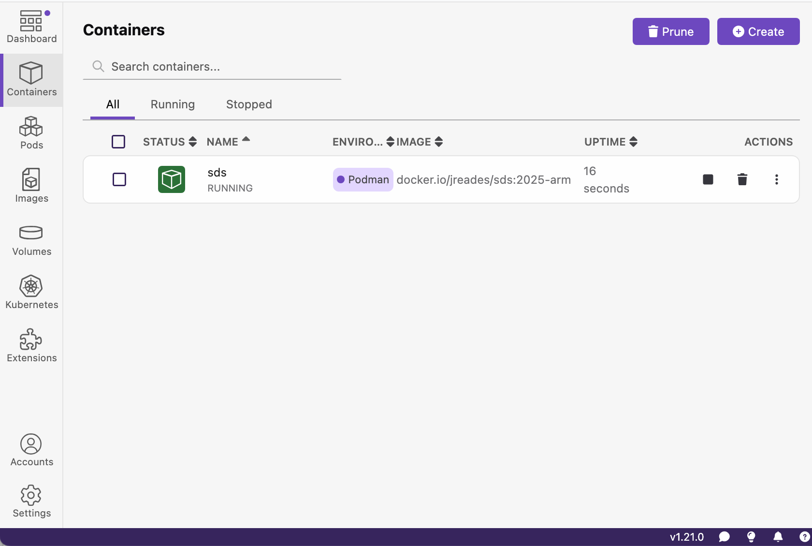
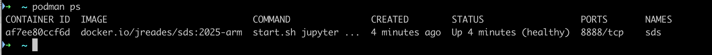

Hello World!Practical 2: Foundations (Part 1)
Getting to grips with the ‘Basics’
| Complete | Part 1: Foundations | Part 2: Data | Part 3: Analysis | |
|---|---|---|---|---|
| 10% | ▓▓▓░░░░░ | ░░░░░░ | ░░░░░░ | 2/10 |
This notebook is focussed on ensuring that you’re able to run Jupyter notebooks locally (i.e. on youu own computer) in Docker and are comfortable with the basics of Python: if you’ve already done Code Camp then this will be a refresher and you’ll have plenty of time to get to grips with Git and GitHub, which often presents significant practical challenges. You should find this notebook quite straightforward, but take any challenges as a sign that you need to keep practicing since subsequent weeks will build on these foundational concepts.
Remember
Please save your work regularly, or prepare to be disappointed. This will be my only reminder about this!
Setting Up
I’m going to assume that you’ve got Docker installed and have managed to ‘pull’ the jreades/sds:2024-intel or jreades/sds:2024-silicon image at this point. If not, this is your most urgent priority. Please make one of us aware of your situation and we’ll do our best to get you going.
Is the Container Running?
Docker will happily keep a container running in the background even if you close every open window. So how do you know if the sds2023 container is already running? There are two ways:
- Open the Docker Dashboard/Desktop from the menu and make sure that you select the
Containerstab on the left (it may be hidden by a message from Docker about upcoming conferences). You should see something like this if the container is running and available:

- From the Terminal/Power Shell you should be able to run:
docker ps. This will give you output something like this:

If the sds2023 container is not running then you’ll need to run the startup command (docker run...) covered in the last practical session
Connect to Jupyter Lab
Once you know the container is running you can connected to Jupyter Lab on localhost:8888 and should see something like this:

You’re connected and can go to Section 1.3.
Getting the Notebook
Downloading from GitHub
On the Week 2 of FSDS page you’ll see that there is a ‘preview’ link and a a ‘download’ link in the Practical section. If you click the preview link you will be taken to the GitHub page for the notebook where it has been ‘rendered’ as a web page by GitHub. But to make the notebook useable on your computer, you need to download the RAW notebook content.
So now:
- Click on the
Download the Notebooklink. - When you see a page of raw code, select
FilethenSave Page As.... - Save the file somewhere easy to find (e.g. Downloads or Desktop).
- Notice that most browsers will save the file as
Practical-02-Foundations_1.ipynb.txt; they have added.txtto the file name without asking. You will need to correct this by either: 1) changing the name in the command line usingmv <name_of_practical>.ipynb.txt <name_of_practical>.ipynb(you can even do this in Jupyter Lab after completing Section 1.3.2); or 2) renaming the file using the Finder (Mac) or Windows Explorer.
Making the Notebook Available to Jupyter Lab
You now need to place the notebook where Jupyter Lab can access it. There is only one place that you can do this, and that is where you ran the docker run ... command which mounted the current working directory to the work directory. Remember that the startup command is something like:
docker run ... -v "$(pwd):/home/jovyan/work" ...The -v (short for volume) tells Docker what part of your computer ($(pwd)) to connect to container (/home/jovyan/work). pwd is short-hand for ‘working directory’ and is the location where you ran the Docker startup command! So we’re talking about the location on your computer when you access the work folder from within Docker/Jupyter Lab:
- On a Mac it will most likely be your
$HOMEdirectory (e.g./Users/your_username/). - On a Windows machine it may be your
$HOMEdirectory but we can’t promise. See the steps above for trying to ensure this is where you end up.
Perhaps a video will help clarify?
Staring the Notebook
From within Jupyter Lab you should now be able to start the notebook:
- Make sure Jupyter Lab is showing (üìÅ
/work/) in the left-hand menu. - Navigate to the location that you saved
Practical-02-Foundations_1.ipynb. - Double-click the file and you should see the notebook appear on the right-hand side.
Now you can run code directly in your browser, so let’s try it!
Hello World!
Nearly every introduction to programming course starts with the famous ‚ÄòHello World!‚Äô, so why do anything different? Try typing the below into the empty ‚Äòcell‚Äô that has appeared and then clicking on the right-triangle (▶) in the area above between the clipboard üìã for copying and the ‚ñ† for stopping running code:
print('Hello World!')Hopefully, the following has appeared directly below the code:
Tip
You can always click the ▶ icon above, but it will be much faster to get into the habit of type Ctrl+Enter instead when you have placed your cursor in a code cell. This is also how to turn a Markdown cell back into display text.
Python Variables
Connections
This is a short recap of materials covered in this week’s video on Python: the Basics as well as Code Camp’s The Basics
Variables Names
Look closer!
Pay attention to the colour of the code, while it might be subtle (a single character in a different colour), it is giving you clues as to where problems might be found because it means the Python ‘interpreter’ is reading what you wrote differently from how you probably meant it…
Some of the lines of code below are valid Python, but others may have a problem that will cause Python to generate an error. Each error can be fixed by changing one character. See if you can work out which ones you need to fix before running the code:
Question
Pi = 3.14159 # Valid Python
pi = 3.14159 # ??
3pi = 3.14159*3 # ??
pi_2 = 3.14159**2 # ??
pi^2 = 3.14159**2 # ??
my radius = 5 # ??
My_Radius = 5 # ??
class = 5 # ??Variable Types
Before running the code below, work out what the output will be for each of the print commands below when the code is executed. Write them as comments on the same line as the code (after the #, see example).
Question
x = '2'
y = z = 2
print(y * z) # 4
print(x * y) # ??
print(x + x) # ??
print((y+z)**z) # ??
print(y/(y+z)) # ??
print( type(x * y) ) # ??
print( type(y * z) ) # ??
print( type((y+z)**z) ) # ??
print( type(y/(y+z)) ) # ??Assignment
Before running the code, work out what the values of x, y and z will be after every line of code in the block has been executed.
Question
x = 12
y = 10
z = x + y # ??
x = x + y # ??
y = z + y # ??
# print(x)
# ??
# ??Once you have worked out what you think x, y and z are, add print(...) statements to the code above to check your answers!
Make sure you understand the results you find. Ask someone if you need help to understand.
Operators & Precedence
Before running the code, work out what the values of x, y and z will be after every line of code in the block has been executed. Feel free to use a calculator.
Tip
This question is about what operations (i.e. multiplication, division, powers, etc.) are done first based on the type of operation and the presence of parentheses… it’s the same as it would be for a maths problem!
Question
x = 1 + (2 * 3) / 4
y = (1 + 2) * (3 / 4)
z = 1 + 2 * (3 / 4)
print(x) # x is
print(y) # y is
print(z) # z is Once you have calculated what you think x, y and z are, run the code to check.
Test Your Operator Knowledge
Now let’s look at some of the stranger operators. Many of these can be very useful in more complex code but can seem a little pointless now.
Work out what operator should replace the ?? in each of the lines of code below to produce the output I’ve shown in the comments. I’ve mixed in ones you have seen above with ones that we’ve not seen before.
Question
x = 10
y = 3
print( x ?? y ) # 1
print( x ?? y ) # 13
print( x ?? y ) # False
print( x ?? y ) # 1000
print( x ?? y ) # 7
print( x ?? y ) # 3Applying What We’ve Learned
Now we are going to take what we’ve learned and apply it in a more ‘abstract’ way: how do we translate some well-known mathematical formulae into code? In particular, I’m interested in the formula for the volume of a sphere (and this gives me a chance to show that Notebooks can show formulae as well!):
\[ V = \frac{4}{3}\pi r^{3} \]
Calculate the Volume of a Sphere
So, given a sphere with a diameter of 12cm, calculate its volume:
Tip
I would strongly advise you to Google: python constant pi and look for code that will save you having to write down the value of \(\pi\).
Question
from math import ??
v = ??
print(f"{v:0.3f} cm3")I get an answer of 904.779cm\(^3\).
Calculate the Radius of a Sphere
Now, given a sphere of volume 14,137cm\(^3\) calculate its radius as a whole number. The formula for this can be worked out as:
\[\begin{align*} \frac{3}{4}V &= \pi r^{3} \\ \frac{3}{4}\frac{V}{\pi} &= r^{3} \\ (\frac{3}{4}\frac{V}{\pi})^{1/3} &= r \end{align*}\]
If you can’t remember how to rearrange formulae this would be a good skill to refresh!
Tip
There are three ways to get a “whole number” from a float:
- When you’re starting out, the easiest is to change the variable’s
type - The next step up is to make use of Google to find out if there are ways of rounding to the nearest integer
- The third step is to change what’s visible to the user without altering the actual number
I get an answer of either 14 or 15… can you work out why?
Question
from math import pi
v = 14137
r = ??
print(??)Python Conditions
Connections
This is a short recap of material covered in Code Camp’s Truth & Conditions and, to some extent, the Iteration lecture.
Working with Conditions
Use if, elif, and else so that you get the following output:
- When
hoursis 10 or more, then the code printsAt least 10 hours worked! - When
hoursis exactly 2, then the code printsExactly 2 hours worked.
- When
hoursis 9 or less but not 2, then the code printsLess than 10 hours worked!
Hint
You will also need to think about the order in which these conditions are tested.
Question
hours = 2
if hours ??:
print(" ")
elif hours ??:
print(" ")
else:
print(" ")Flow Control
Using the flow chart shown in the image below as a model, write the code to make this condition work. You will need to complete the code such that it produces the following: 1. When a = 2 and b = 2 four lines of output will be written 2. When a = 1 and b = 2 one line of output will be written

Question
a = 1
b = 1
# <your code here>
??Python Logic
Connections
This is a short recap of Code Camp’s Boolean Logic session and the Pthon: the Basics lecture.
It’s All Quite Logical…
Before adding a value for x and running the code below, try to answer the following questions:
Question
- What names are name(s) are printed when
x = 5? - What value(s) can
xbe when the namesJoeandAledare printed? - What name(s) are printed when
x = -1?
- Is there any value for which all three names will be printed?
x = ??
if x > 0 and x < 5:
print("Joe")
if x > 0 or x < 5:
print("Aled")
if not(x > 0):
print("Sarah")Logic (Cont’d)
Study the flow chart below.

Tip
This will require you to combine logic with one of the operators that we saw earlier. Also note the new iterator that we’ve got here: range(<start>, <stop>) to create a range of numbers between two other numbers.
In the cell below, use the for loop already set up to as a starting point for implementing the flow chart shown above for values of x between 0 and 9.
Question
for x in range(0,9):
#... do something...
??‘Nested’ Conditionals
Conditional statements can be nested within one another. That is, Python evaluates the first, or ‘outer’, condition and can then evaluate secondary, or ‘inner’, conditions. The code below shows an example of this.
Question
x = 5
y = 4
if x != y: #line 1
print("x is not equal to y")
if(x > y): #line 4
print("x is greater than y")
else: #line 7
print("x is less than y")
else:
print("<insert conclusion here>")Note how the indentation makes it easier to work out which ‘level’ (outer or inner condition) the code is operating on. In the code above, lines 4 and 7 are at the same indentation meaning that both will be skipped if the initial condition (on line 1) is False.
To check you understand how the code above works:
- Change
<insert conclusion here>to a string that explains the condition ofxandy - For
x = 2andy = 3, type what line(s) will be output here: …
Great! You should now have a pretty good understanding of how conditional and logical operators work. This understanding will be handy in future as we work through other computational concepts.
Python Lists
Connections
Who’s in the List?
Here we are looking to interact with lists in a straightforward way that will help you to understand accessing them using indexes and slices, and searching.
Question
cities = ['New York', 'London', 'Beijing', 'Tokyo', 'Delhi']
# Print out London from cities:
print( ?? )
# Print out Tokyo using *negative* indexing:
print( ?? )
# Print out Beijing *and* Tokyo using a list slice
print( ?? )
# Print out London to Delhi using a slice
print( ?? ) # You could also do cities[1:5] but this way is neater
# Combine positive and negative indexing to print out London, Beijing and Tokyo using a list slice
print( ?? )
# Print out the position of New York in the list by searching for it (i.e. you can't just type 0)
print( ?? )Manipulating Lists
Let’s break a few things…
Create an IndexError
Question
# Cause an 'IndexError: list index out of range' errr
??Create a ValueError
Question
# Cause a ValueError using the city of Toronto
??Sort the List
Sort the list in place in reverse alphabetical order (i.e. z…a) and then print the sorted list
Question
??
print(cities)The output from this should be: [‘Tokyo’, ‘New York’, ‘London’, ‘Delhi’, ‘Beijing’]
Adding/Removing Values
Inserting into a List
Add the city of Toronto to the list after New York in the sorted list.
Question
# Just in case you make a mistake...
cities = ['Tokyo', 'New York', 'London', 'Delhi', 'Beijing']
??
print(cities)The output should be: [‘Tokyo’, ‘New York’, ‘Toronto’, ‘London’, ‘Delhi’, ‘Beijing’]
Removing from a List
Now pop New York from the list without specifying its index (i.e. the number 1 should not appear in your code). Print out the value that you popped and the print out the cities list to check you’ve done the right thing…
Question
??
print(p)
print(cities)The output should be:
New York[‘Tokyo’, ‘Toronto’, ‘London’, ‘Delhi’, ‘Beijing’]
Checking Lists
Finally, how can you check if the city of Moscow is in the list and let the user know if it is or is not?
Question
if ??
??
else:
??You’re Done!
This is quite a lot to get through. If you’ve managed it in under 2 hours then congratulations! Either you must have paid a lot of attention when doing Code Camp, or you might want to check in with us as to whether you should really be doing this module…
No Wait, One More Thing…
You might want to refer to both The Command Line and Getting Stuck into Git lectures as well as to The Terminal Code Camp session.
You now want to push your completed notebook to your GitHub reposistory. Using the Terminal or Git Bash you need to:
- Navigate (if you’ve not got a shell already open there) to
$HOME/Documents/CASA/modules/<your repository>. - Check the status of your notebooks using
git status(you should see thatPractical-02-Foundations_1.ipynb has been modified). - Add this changed notebook to git using
git add Practical-02-Foundations_1.ipynb - Commit this changed notebook with a message using
git commit -m "<your message here... but don't use a !>" - Push this change to GitHub using:
git push
You should now be able to visit your repository on GitHub and see that your changes are now stored there as well!
Note
If you are using Docker then you can also save your work as a PDF using: File > Export Notebook As... (this does not work for notebooks with lots of complex formatting).
License
These teaching materials are licensed under a mix of the MIT and CC-BY licenses…